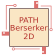

PathBerserker2d
1.0
Platformer pathfinding solution
autoMap :
PathBerserker2d.BaseNavLink
calcNextPathRad :
PathBerserker2d.Corgi.AIActionPBPatrol
client :
PathBerserker2d.PathRequest
closeEnoughRadius :
PathBerserker2d.Follower
closestReachablePosition :
PathBerserker2d.PathRequest
defaultFootstep :
PathBerserker2d.FootStepSounds
enableAgentRotation :
PathBerserker2d.TransformBasedMovement
enabledFeatures :
PathBerserker2d.TransformBasedMovement
footStepDelay :
PathBerserker2d.FootStepSounds
fromAngle :
PathBerserker2d.NavSegmentSubstractor
goals :
PathBerserker2d.PathRequest
keepWalkingRandomly :
PathBerserker2d.RandomWalker
retryCount :
PathBerserker2d.RandomWalker
rotationSpeed :
PathBerserker2d.AdjustRotation
start :
PathBerserker2d.PathRequest
targetPredictionTime :
PathBerserker2d.Corgi.AIActionPBMoveTowardsTarget
,
PathBerserker2d.Follower
toAngle :
PathBerserker2d.NavSegmentSubstractor
travelStartRadius :
PathBerserker2d.Corgi.AIActionPBMoveTowardsTarget
travelStopRadius :
PathBerserker2d.Corgi.AIActionPBMoveTowardsClosestTarget
,
PathBerserker2d.Corgi.AIActionPBMoveTowardsRandomPathableTarget
,
PathBerserker2d.Corgi.AIActionPBMoveTowardsTarget
,
PathBerserker2d.Follower
updateAfterTime :
PathBerserker2d.NavAreaMarker
updateAfterTimeOfNoMovement :
PathBerserker2d.NavAreaMarker
Generated by
1.9.1